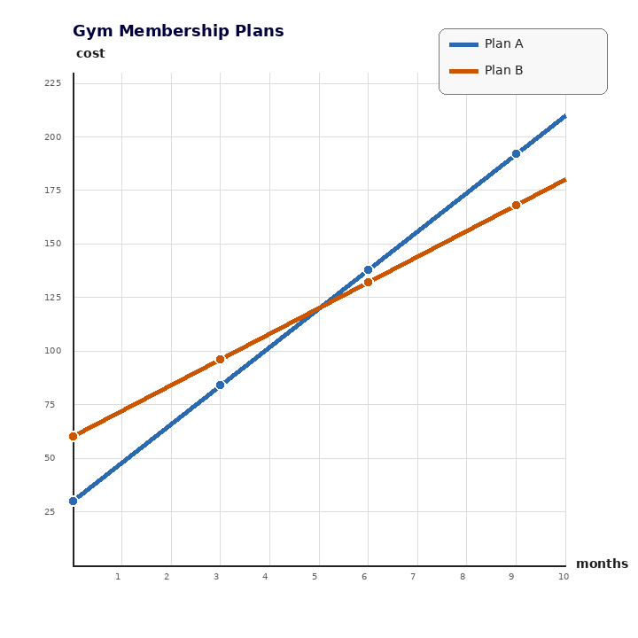
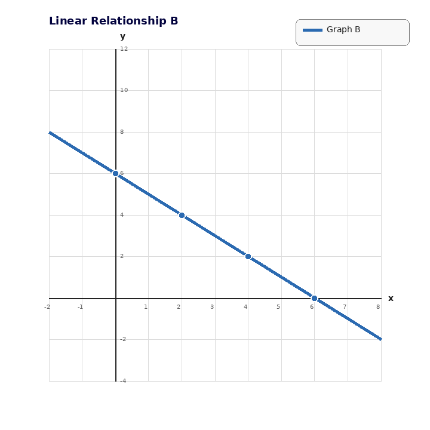
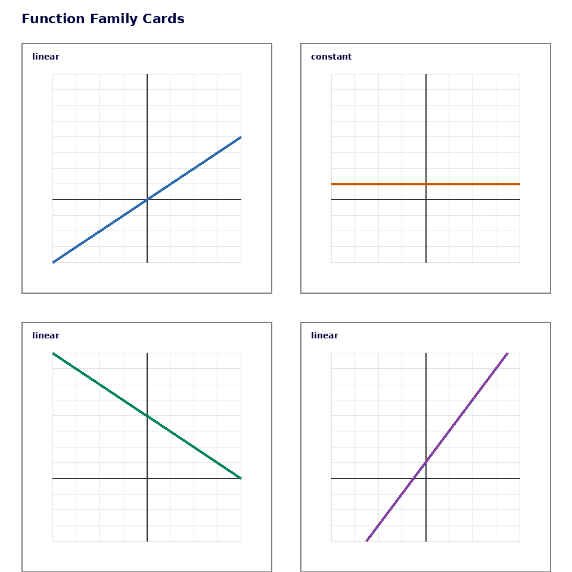

Practice Set 3.3.2
Developing spiral practice without workspace. Current 3.3, main spiral 2.3, earlier readiness 1.3.
Spiral Plan and DoK Balance
Current Focus
Unit 3.3: Writing and Solving Systems from Situations
DoK 1, DoK 1, DoK 2, DoK 3
Unit 3.3: Writing and Solving Systems from Situations
DoK 1, DoK 1, DoK 2, DoK 3
Main Spiral
Unit 2.3: Writing Linear Equations
4 DoK 1, 2 DoK 2, 1 DoK 3, 1 DoK 4
Unit 2.3: Writing Linear Equations
4 DoK 1, 2 DoK 2, 1 DoK 3, 1 DoK 4
Earlier Readiness
Unit 1.3: Function Families
DoK 1, DoK 1, DoK 2, DoK 3
Unit 1.3: Function Families
DoK 1, DoK 1, DoK 2, DoK 3
Practice Set 2: This is a section-aligned spiral: 3.3 with 2.3 and 1.3. It is not a previous-section spiral.
1.
For the gym plans graph, identify what the input and output represent.

2.
Plan A costs $30 plus $18 per month. Plan B costs $60 plus $12 per month. Write one equation for each plan.
3.
Solve the system $C=30+18m$ and $C=60+12m$. Interpret the solution in context.
4.
A student says Plan B is always more expensive because it starts at $60. Critique the statement using the equations.
5.
Identify the slope and $y$-intercept of $y=-x+6$.
6.
Which graph card appears to have a negative slope?
7.
Write the equation for a line with slope $2$ and $y$-intercept $-2$.
8.
In $y=mx+b$, what does $b$ tell you about the graph?
9.
Use the table to write an equation.
| $x$ | 0 | 1 | 2 | 3 |
|---|---|---|---|---|
| $y$ | 6 | 10 | 14 | 18 |
10.
Write an equation for Graph B.

11.
Explain why two points are enough to determine a linear equation.
12.
Create two different linear equations that have the same $y$-intercept but different slopes. Explain how their graphs would compare.
13.
Classify $y=x^2+4$ as linear, quadratic, exponential, or absolute value.
14.
Which function family is most associated with repeated multiplication?
15.
Use the cards to list two examples of linear graphs.

16.
A student says every increasing graph is linear. Use a function family example to critique the claim.